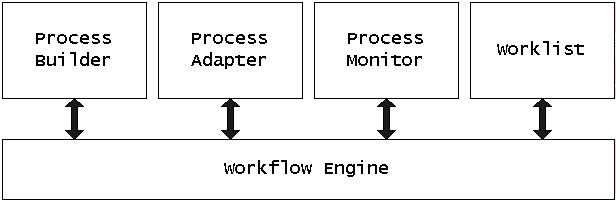

OpenACS Documentation : Workflow : Workflow Maintainer's Guide
|  |
| Major components of the Workflow Package (open in separate window) |
The Engine is the heart of the system. It's the part that determines what actions you can perform on a case, and keeps track of the state of the case as actions are performed. It also stores the process definitions and the state of all the cases on the system.
The Worklist is what the normal end-user sees. It's where the user goes to see the list of tasks he or she is assigned to, and interacts with the system to let us know he's done.
The Process Builder lets you define and share processes. The Process Adapter lets you customize assignments and special side-effects of your process to your situation. And finally, the Process Monitor lets you monitor the performance of a process.
wf_tasks. This table may have
more than one row per transition for a number of reasons. If the user
starts the task, then decides to cancel, a new row is inserted, as the
same transition becomes enabled again. If there's an iteration in the
workflow definition, so the same transition becomes enabled more than
once, a new row is inserted each time.
Each task has a state. It starts out as 'enabled'. It moves to 'started', then possibly to 'canceled' or 'finished' in response to user actions. If the transition is part of an implicit or-split (where two transitions share one input place), the task may become 'overridden' if the other task is triggered.
assignment_callback column in
wf_context_transition_info.
wf_case_assignments. You're encouraged to use the
API: workflow_case.add_manual_assignment and
workflow_case.clear_manual_assignments.
wf_context_assignments table.
wf_tasks and the actual
assignment is determined, and copied over into
wf_task_assignments. The logic is this:
wf_case_assignments. If there is, we copy these over to
wf_task_assignments. (We used to check for a callback
first, but this way if a task is reassigned, the reassignment persists
for subsequent instances of the transition.)
workflow_case.add_task_assignment API to add the actual
assignment for this task.
wf_context_assignments to
wf_task_assignments.
In every event, a number of rows are created in
wf_task_assignments. This is the authoritative version of
who's assigned to this task. You're free to change the assignment of a
task by altering the contents of
wf_task_assignments through the API or directly. If you
use the workflow UI, this change will be persistent. However, if you
don't want reassignment to persist in your application, changing
wf_task_assignments alone will accomplish this.
The view wf_user_tasks returns one row per task and per
user assigned to a task. This is the view to query to get the list of
tasks on a user's plate, and to get information about assignments for
a task. It does the job of traversing the parties hierarchy to expand
groups.
workflow_case.begin_task_action
workflow_case.set_attribute_value zero or more times.
workflow_case.end_task_action
The action argument to the procs are 'start', 'cancel',
'finish' or 'comment'. Comment doesn't alter the state of the task,
and can be used for either adding a comment on the case, and/or to set
a workflow attribute without finishing the task.
It's perfectly okay to finish a task without explicitly starting it. If there are multiple users assigned to the same task, however, it's strongly recommended that the user starts the task first, as that will remove it from the worklist of other users, so we don't have multiple users working on the same task.
sql/wf-core-drop.sql DDL script.
sql/upgrade/*.sql DDL upgrade scripts.
tcl/workflow-procs.tcl file, proc
wf_export_workflow (at the bottom).
| Last Modified: $Date: 2005/04/27 22:50:59 $ |